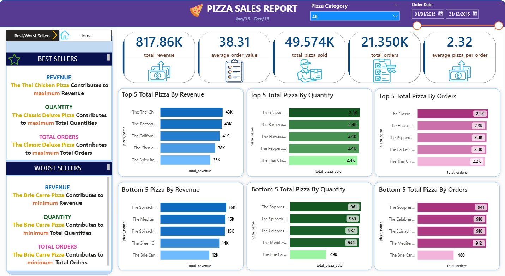
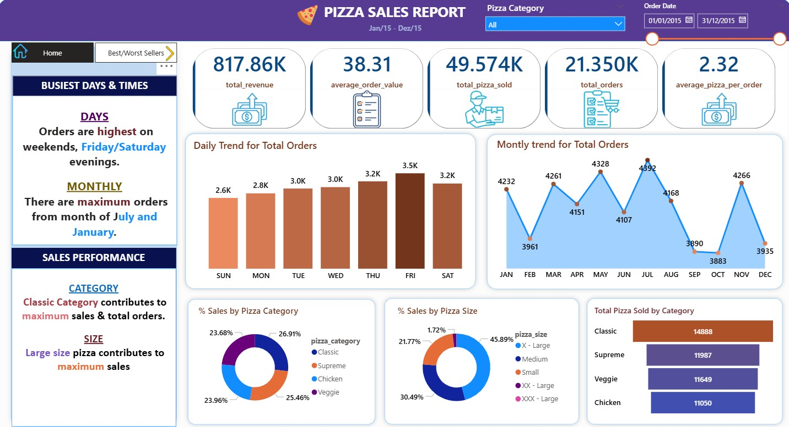

Dashboard Case StudyPower BISQL · Power Query · DAX
Pizza Sales Dashboard
A portfolio case study built from pizza sales data, where SQL handled the main queries, Power Query shaped the data inside Power BI, and DAX powered the KPI measures and visuals for analysis.
Problem
The raw pizza sales data needed to be transformed into a clean reporting model that could highlight revenue, order volume, product mix, and sales trends.
Solution
I wrote the core queries in SQL, used Power Query for data shaping inside Power BI, and built the dashboard with DAX measures for the KPIs and breakdowns.
Dashboard pages

Best/Worst Sellers page with KPI cards and ranking visuals for revenue, quantity, and total orders.

Home page with busy days, monthly trend, and sales performance by category and size.
These are the real report screenshots from the project folder in GitHub.
What the report shows
Executive overview
The report opens with the main KPIs: revenue, average order value, total pizza sold, total orders, and average pizzas per order.
Best and worst sellers
Top and bottom product rankings make it easy to see which pizzas drive revenue and which ones need attention.
Sales trends
Daily and monthly trends show when demand peaks across the year, supporting planning and performance reviews.
Category and size mix
Category and size visuals show customer preference patterns and the sales mix at a glance.
How it was built
Query the dataset in SQL
I used SQL to prepare the dataset and shape the base fields that feed the reporting model.
Load the source tables and validate the structure
Standardize fields for analysis
Remove inconsistencies and duplicates
Prepare a reporting-ready dataset
Shape the model in Power Query
Power Query handled the transformations inside Power BI so the model stayed clean and ready for analysis.
Apply transformations inside Power BI
Refine data types and column logic
Prepare the model for analysis
Keep the reporting layer lean and reliable
Build KPI measures in DAX
DAX powered the KPI cards, category splits, and ranking visuals used in the report.
Calculate revenue and order metrics
Build measures for totals and averages
Support top and bottom seller analysis
Power the dashboard visuals
Deliver the dashboard narrative
The final output is a business-friendly dashboard that turns raw pizza sales data into clear, actionable insights.
Executive dashboard design
Clear KPI structure
Data storytelling
Decision support for business users
Tools and technologies
SQL
Base queries and data preparation
Power Query
Data shaping inside Power BI
DAX
KPI measures and business logic
Power BI
Reporting, visuals, and storytelling
Why it matters
How to move from raw data to reporting-ready outputs
How SQL, Power Query, and DAX work together in one reporting flow
How Power BI turns metrics into a clear business story
How to communicate data findings in a portfolio-friendly format
Business value: this project shows a full analytics workflow from data preparation to dashboard delivery, with clear reporting for decision-making.